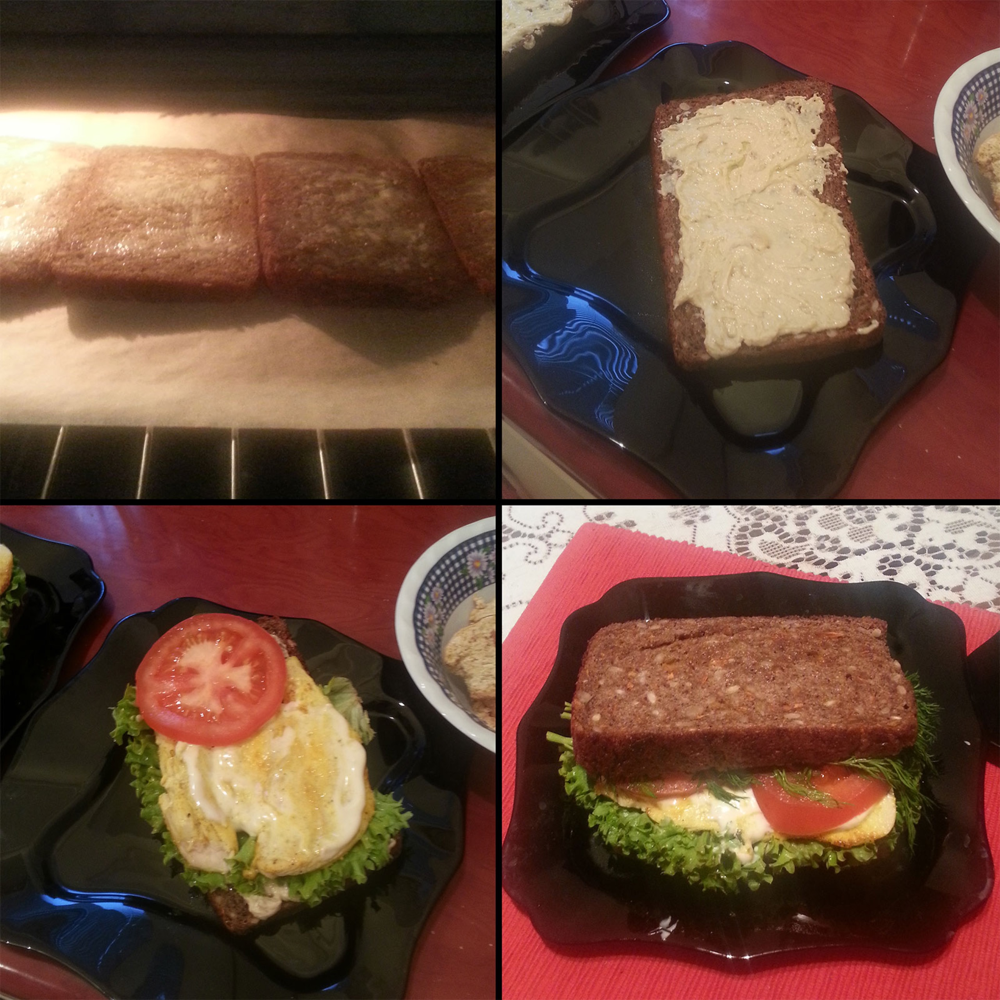

Навеяно фильмом «Повар на колесах».

Сегодня на обед была запланирована операция утилизации найденного в холодильнике.
Взять буханку хлеба, отрезать четыре ломтя вдоль. Намазать тонким слоем масла и на 5 минут поставить в духовку на 220°С. Любители могут делать без масла, конечно же.
В это время куриное филе (у меня было уже отварные половина грудки) нарезать тонкими полосками, метнуть на сковороду, присыпать специями и быстро обжарить.
Пока курица жарится на сковородке, помыть салат, петрушку и помидор.
Выключить духовку, достать готовые «гренки».
Хлеб намазать сверху хумусом (потому что он был и его надо было утилизировать). Выложить сверху лист салата и куриное филе. Немножно добавить домашнего, вручную сбитого майонеза. Укрыть помидорками. Выложить петрушку. Промазать французской горчицей, совсем чуть-чуть. Закрыть вторым куском хлеба.
Поставить тарелку с чикенбургером на стол. С силой сдавить, чтобы соус пропитал хлеб. Сожрать, урча и отгоняя ногой Лесли-пса.